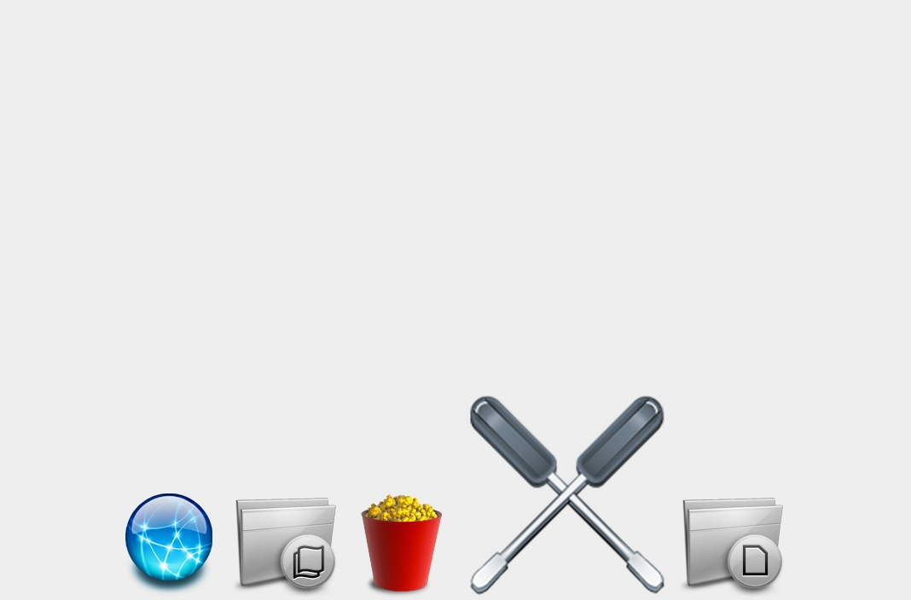

菜单
菜单类
菜单类
back
仿苹果菜单
多级树型菜单
仿京东左侧菜单
时钟类
时钟类
back
炫酷数码时钟
放大镜类
放大镜类
back
放大镜
幻灯片类
幻灯片类
back
幻灯片
拖动类
拖动类
back
四边四角拖拽
多碰撞检测
DragAndDrop
图片展示
图片展示
back
图片展示
自定义组件类
自定义组件类
back
自定义万年历
自定义单选按钮
自定义下拉框效果
其他常见效果
其他常见效果
back
颜色选择器
瀑布流
图片懒加载
缓冲运动
图片上下滑动展示
Slien's Blog
work demos
打开/关闭 菜单
仿苹果菜单效果,用到了html+css+js
